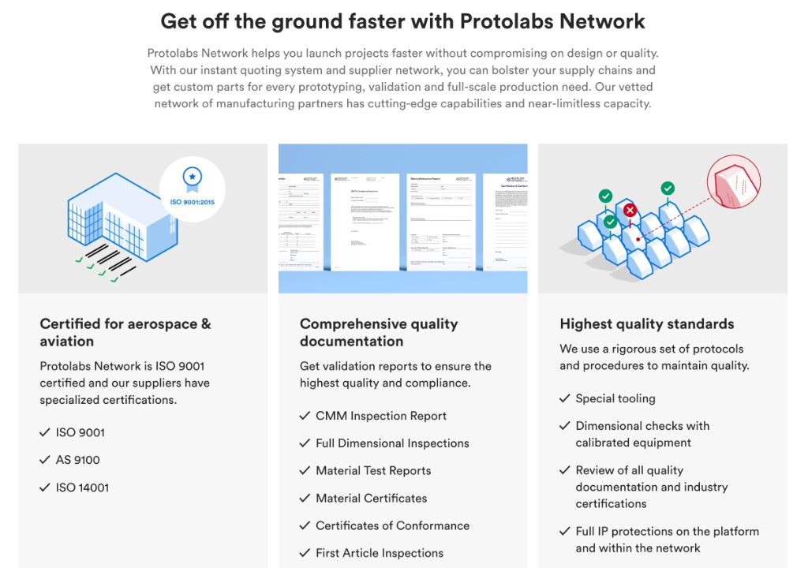

Certified Quality Systems
ISO-driven controls and audited supplier governance provide confidence for high-compliance parts.
- ISO 9001 quality management
- ISO 14001 environmental management
- Documented supplier qualification
From high-tolerance tooling to production-grade quality systems, RIXIN helps engineering teams move from design to dependable scale manufacturing.
A disciplined quality framework ensures stable outcomes for aerospace, medical, automotive, and electronics programs.

ISO-driven controls and audited supplier governance provide confidence for high-compliance parts.
Validation records support traceability across prototype, pilot, and mass production stages.
Control plans and dimensional verification routines keep critical tolerances and surfaces consistent.
Choose an industry profile to review common materials, engineering considerations, and representative production parts.
For mould components, dimensional stability and wear resistance are prioritized. We combine CNC, EDM, and grinding routes to maintain critical fit features across inserts, cores, and cavity details.
We support high-precision tooling programs where wear control, stable fit features, and repeatable cavity quality are critical.
Select from industrial-grade materials tuned for wear resistance, dimensional retention, and tooling stability.
Select finishes that improve cavity release, wear behavior, and long-run repeatability.
Automotive components require repeatable tolerance control across long production windows. We balance tooling robustness with cycle-time efficiency for structural, bracket, and functional programs.
From under-hood features to interior structures, we improve production stability across a wide range of automotive components.
Select from production-ready materials engineered for lightweight structures and functional durability.
Select finishing routes that support corrosion resistance, assembly reliability, and cosmetic consistency.


Appliance and electronics assemblies demand clean cosmetic surfaces, precise interfaces, and stable dimensions across high-cycle production programs.
We support consumer and appliance assemblies that require clean cosmetics, robust housings, and stable interface geometries.
Select from robust industrial-grade materials for enclosure strength, interface precision, and long-run stability.
Select finishing standards for cosmetic consistency, touch safety, and robust daily-use durability.


Medical programs prioritize traceable measurement, stable material behavior, and controlled surface quality for verification-heavy requirements.
Medical projects require traceable dimensions and stable materials for verification-heavy components and precision interfaces.
Select validated materials for biocompatibility pathways, precision fit, and documented lot-level consistency.
Select surface treatments that support cleanliness readiness, feature clarity, and repeatable inspection outcomes.


We apply stage-based quality control, including first article inspection, in-process dimensional checks, and final outgoing verification. The same control plan logic is carried from prototypes into serial production to keep data and acceptance criteria consistent.
Yes. Beyond commonly used polymers and metals, we support project-based sourcing for specialized grades when engineering requirements justify them. Material substitutions are reviewed with performance, compliance, and lead-time impact in mind.
For precision features, we build process routes around CNC, EDM, and grinding combinations and verify dimensions using calibrated inspection equipment. Acceptance is tied to drawing-critical points, not only nominal dimensions.
Lead time planning is split into engineering review, process readiness, and production windows. Repeat projects benefit from retained process knowledge, which shortens setup cycles and reduces approval risk during ramp-up.
Customer files are handled under controlled access, role-based sharing, and documented communication workflows. NDA-aligned handling is integrated into project onboarding to reduce IP exposure throughout the product lifecycle.